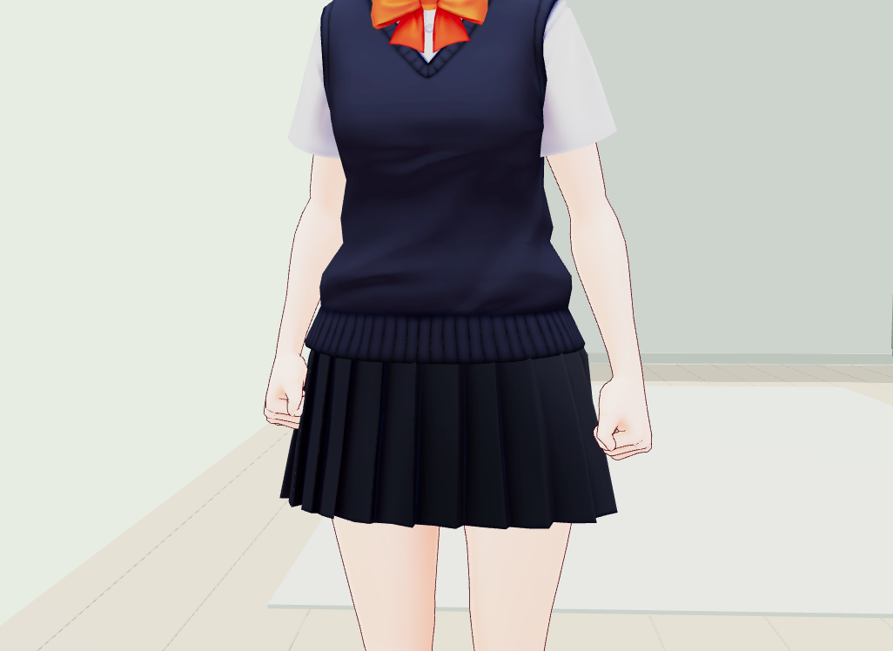
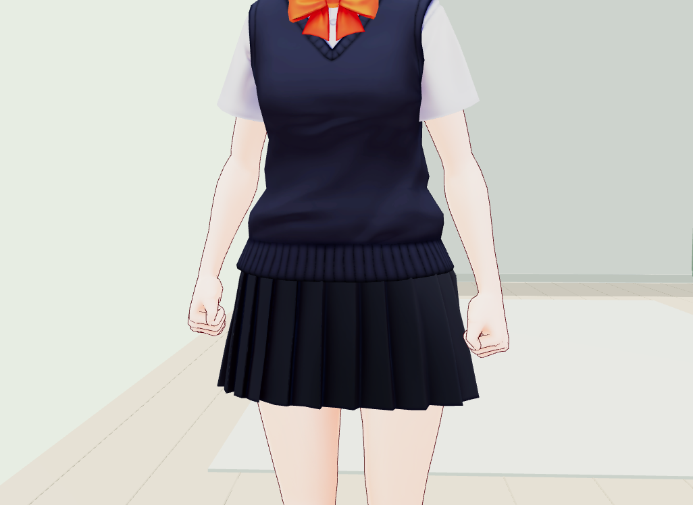
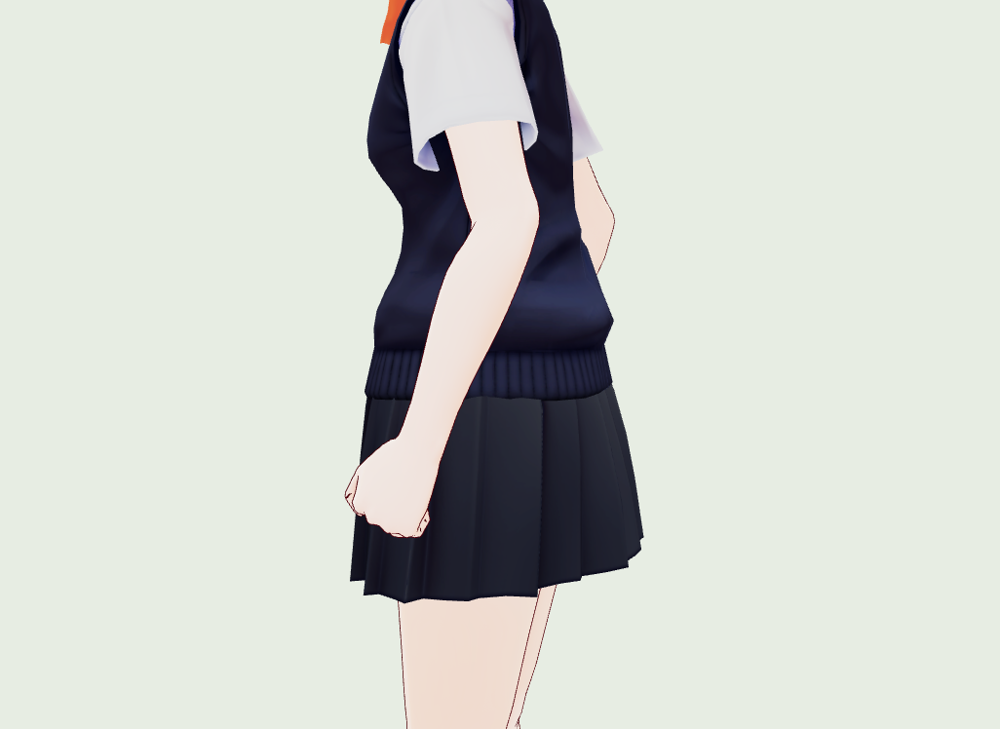
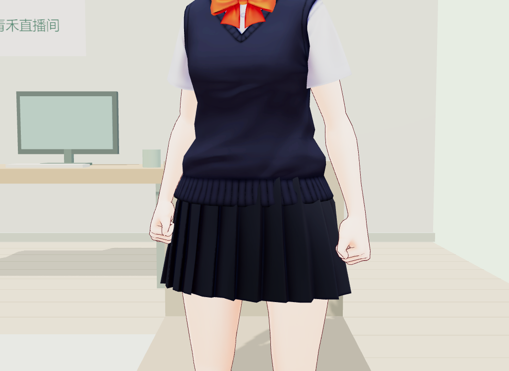
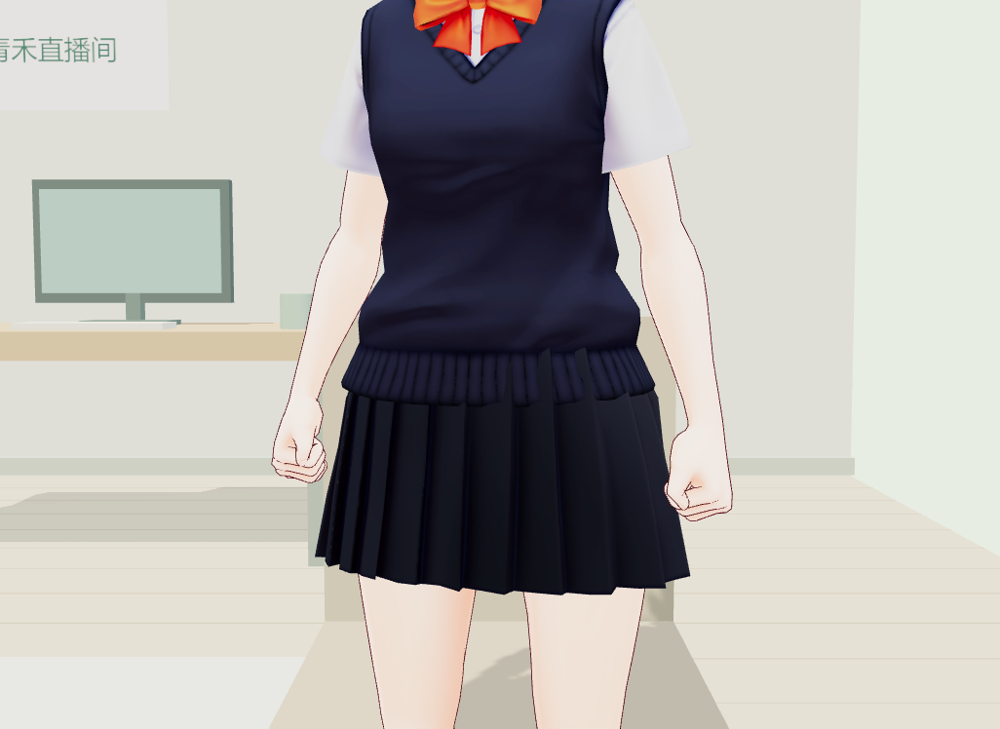
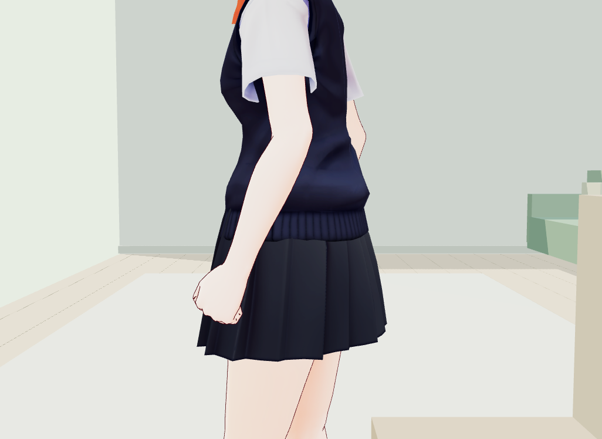

新增左腕单步15.048/13.488mm由solver投影骤降造成；精确过渡的正常速度可见性未验。 分解报告
唯一修改：走动/舞蹈继续既有手接触求解。四姿真实skin相交203/165/5/0→0/0/0/0，不代表全动作已通过。最大腕位移34.691mm，新增约1ms/substep；细节见报告。
固定room，wall19.3225s，sim/wall .997216；与7a86原片是相同镜头/命令，事件完成时间可能不同，不强行逐帧同步。





